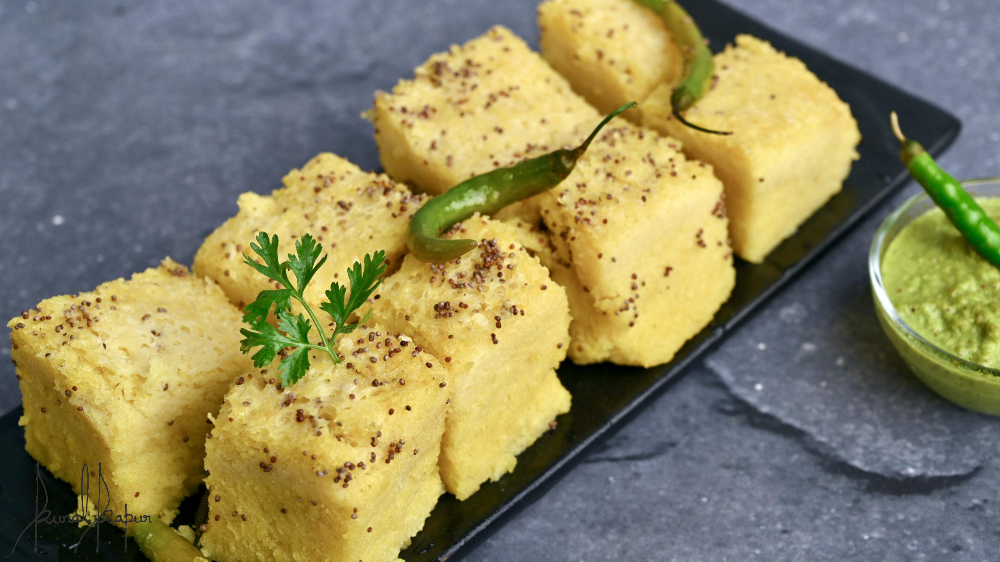

Khaman Dhokla

hmm what exactly is Khaman Dhokla
With this easy step by step photos recipe of khaman dhokla, you can prepare soft and spongy instant dhokla in less than 20 minutes and you do not need to prepare batter 8 or 12 hours in advance. The secret of its sponginess and no requirement of advance preparation lies in using popular Eno salt.
Follow our easy breakfast recipe with step by step photos and discover how easy it is to make mouth watering traditional khaman at home.
ingredient
For Batter
- 1 cup Gram Flour (Besan/Chickpea Flour)
- 1 tablespoon Semolina (rava/sooji), optional
- 1½ teaspoons Lemon juice
- 1 teaspoon crushed Green Chilli-Ginger (or paste)
- 1/4 cup Curd (plain yogurt
- 3/4 cup Water
For Tempering
- 2 tablespoons Oil
- 4 Green Chillies, slit lengthwise and cut into halves
- 1 tablespoon Sugar
- 2 tablespoons chopped Coriander Leaves
- 2 tablespoons grated Fresh Coconut
Let's Cooke shall we!!
- Take all ingredients to prepare batter. Pour approx. 2-3 cups water in steamer at bottom and heat it over medium flame. Make sure that steamer is at least 4-5 minutes heated before placing the plates (filled with batter) in it. Grease 2 small plates or thalis (4-5 inch diameter) using 1-teaspoon oil.
- Take 1 cup gram flour, 1 tablespoon semolina(sooji/rava), 1½ teaspoons lemon juice, 1 teaspoons green chilli-ginger paste, 1/4 cup curd, 3/4 cup water and salt in a bowl. Mix them properly into smooth batter. Make sure that there are no lumps.
- Add 1 teaspoon fruit salt in batter and stir in one direction for approx. 1 minute. You will notice its size would increase to almost double.
- Add 1/3 cup water and 1 tablespoon sugar and bring it to a boil; let it cook for a minute over high flame. Tempering(tadka) is ready, pour it over dhoklas and toss gently until each dhokla is coated well with tempering.
- Garnish with 2 tablespoons chopped coriander leaves and 2 tablespoons grated coconut. Serve with green coriander chutney.
Take me home